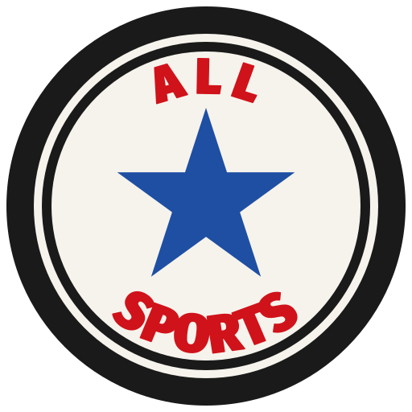

All Sports
Selos no mesmo desenho da patch que você marcou: bloco preto, letra pesada e uma estrela no meio do nome. O texto é All Sports, com a verde do app e a estrela dourada.
Patch redonda

Selos no mesmo desenho da patch que você marcou: bloco preto, letra pesada e uma estrela no meio do nome. O texto é All Sports, com a verde do app e a estrela dourada.
